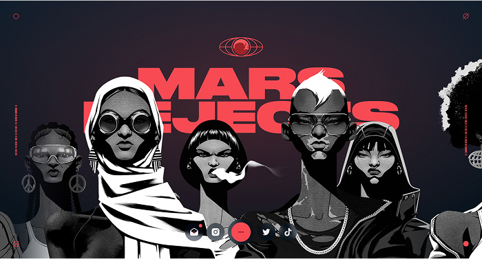
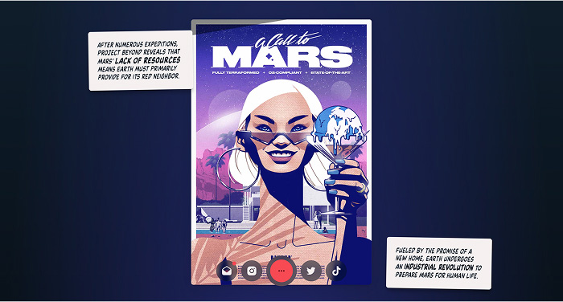
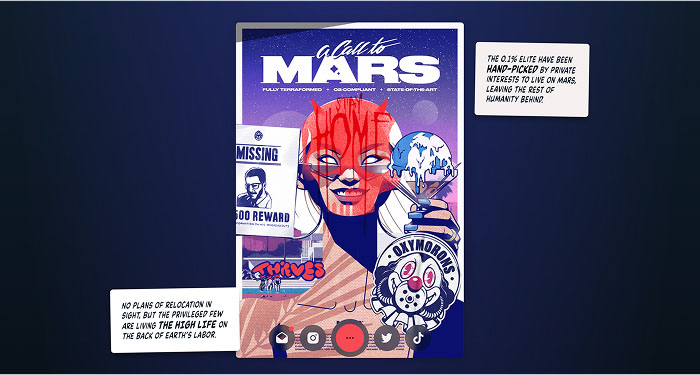
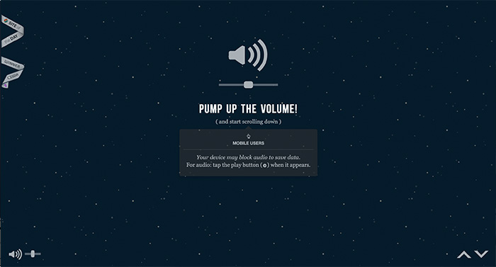
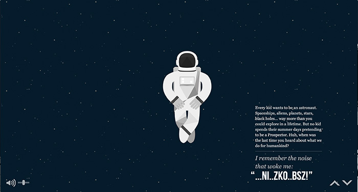
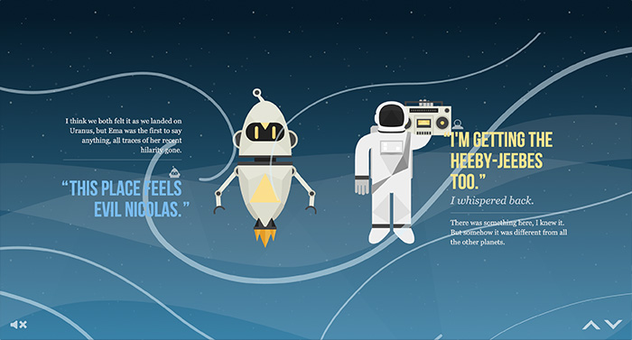

The Mars Rejects website's main feature is its scroll animation made with layers of illustrations in a comic book style.
This website begins with a horizontal scroll animation that automatically and infinitely plays. It features the characters by placing them at the front layer. However, the title in the back layer still catches attention for its font weight and color contrast.
As I scroll down the website, the information loads in a storytelling method. Each text block is short and easy to read as it is styled like a comic book.
The main image while storytelling also animates. As I scroll down, the main image in the middle gradually and slightly scales up with layers of illustrations being added on top. This makes it interesting as if the comic book is putting all content onto one page without overwhelming the audience.
The NASA: Prospect website also uses scroll animation to enhance storytelling.
This website begins with notifying about the ability to adjust volume and a warning for mobile users, which makes the website already user friendly.
As I scroll down the website, there are various animations such as scaling up and down of characters, characters moving, scenes changing, text appearing and disappearing. I like how the designer not only focuses on the character animation, but also puts a lot of attention onto the background effects, which makes the scrolling process more engaging.
Not only the graphics animate as the user scrolls down the page, I like how the background music also changes depending on the scene. Another user friendly element is the up and down arrow on the bottom right corner, which is an alternative to scrolling.
